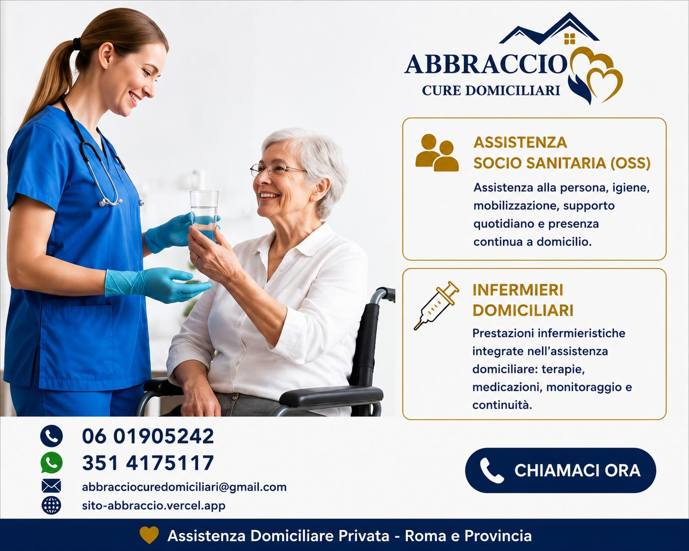
Assistenza Infermieristica
Terapie, medicazioni, iniezioni e gestione farmacologica professionale a domicilio.
- Terapie e infusioni
- Medicazioni complesse
- Gestione cateteri e stomie
Hai bisogno di assistenza sanitaria, fisioterapia, OSS o esami a domicilio? Ti aiutiamo a Roma e provincia, senza farti perdere tempo.
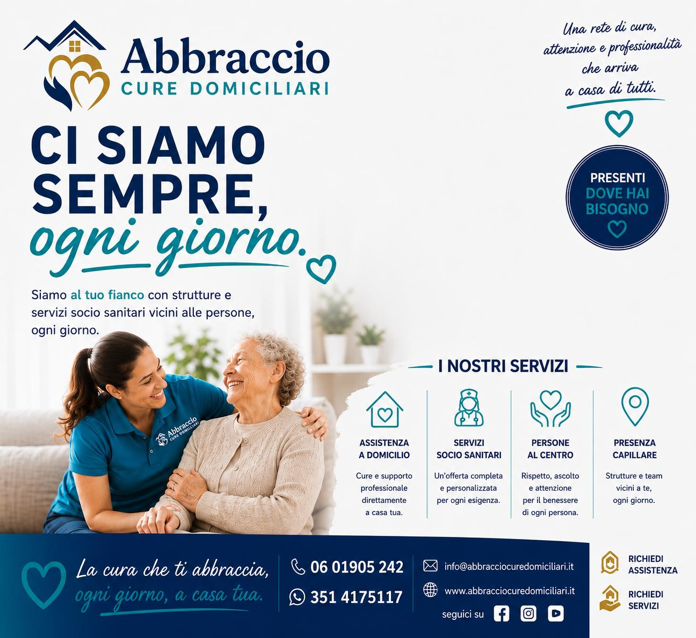
Professionisti sanitari certificati
Servizio attivo 24 ore su 24. Ufficio: Lun-Sab 9:00-17:00
Approccio umano e personalizzato
Esami strumentali a domicilio
Monitora i tuoi parametri vitali direttamente da casa, in tempo reale e in totale sicurezza. I nostri specialisti ti seguono a distanza, 24 ore su 24.
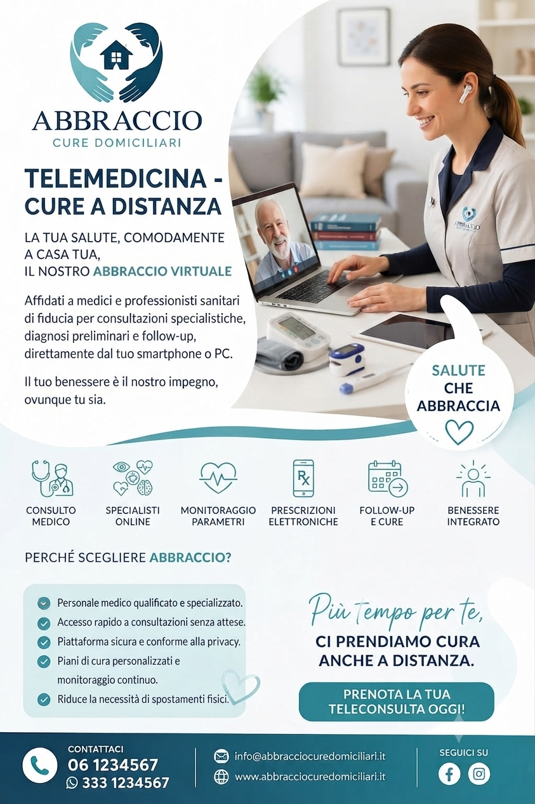
Scopri le iniziative di Abbraccio e iscriviti. I dati inseriti sono usati esclusivamente per gestire la partecipazione e il relativo contatto.
Al momento non ci sono eventi programmati.
Soluzioni sanitarie integrate: assistenza, riabilitazione, diagnostica e trasporto

Terapie, medicazioni, iniezioni e gestione farmacologica professionale a domicilio.
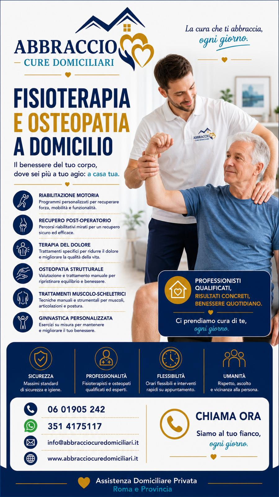
Programmi riabilitativi personalizzati per il recupero funzionale e il benessere.
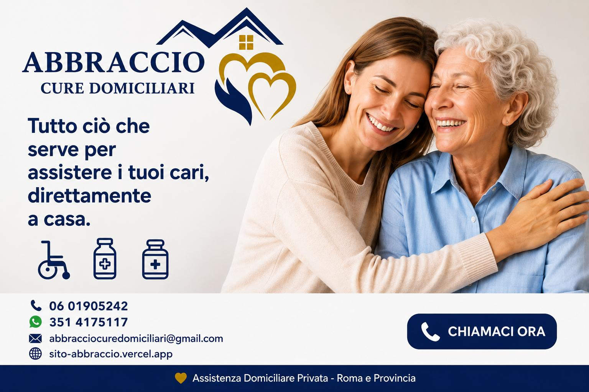
Supporto completo per persone anziane, promuovendo autonomia e qualità della vita.
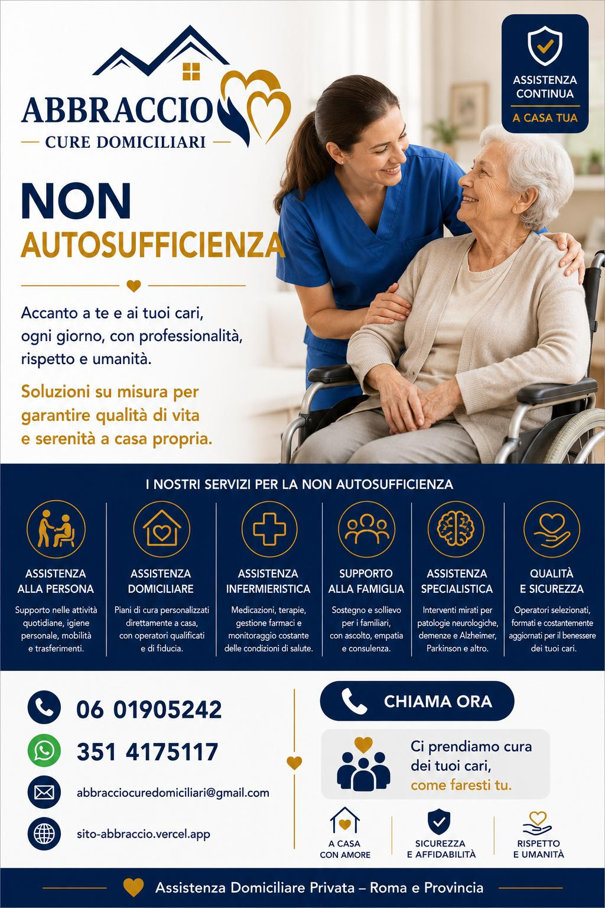
Gestione integrata di patologie croniche con monitoraggio continuo e personalizzato.
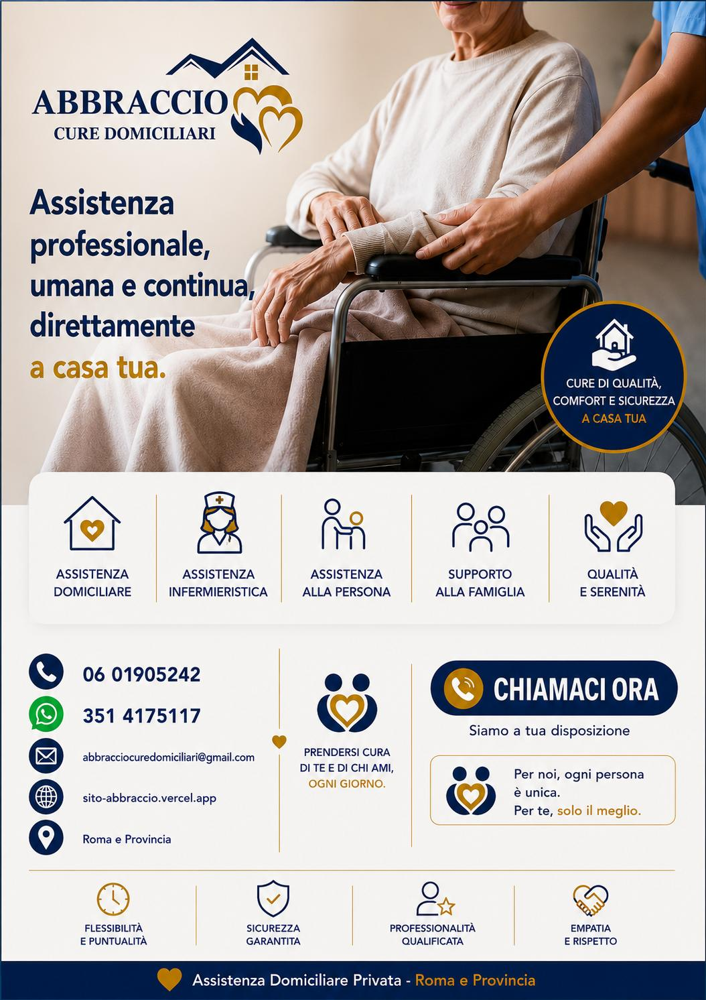
Presenza qualificata durante la notte per garantire sicurezza e tranquillità.
Supporto compassionevole per pazienti in fase avanzata e per le loro famiglie.
Percorsi di supporto psicologico personalizzati per pazienti e caregiver, anche a domicilio.
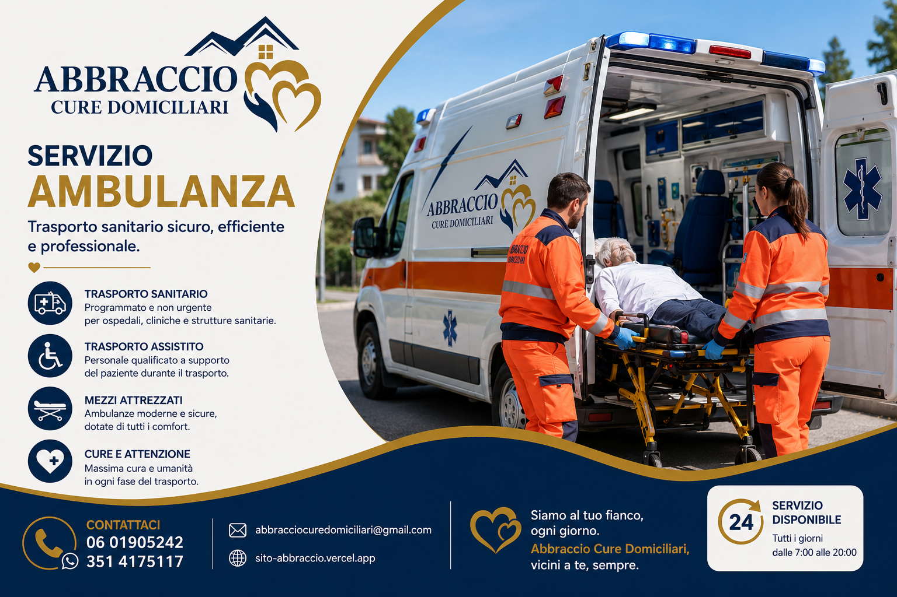
Trasporto sanitario professionale per visite, terapie e ricoveri programmati.
Diagnostica completa: holter, esami sangue, RX, ecografie e altro
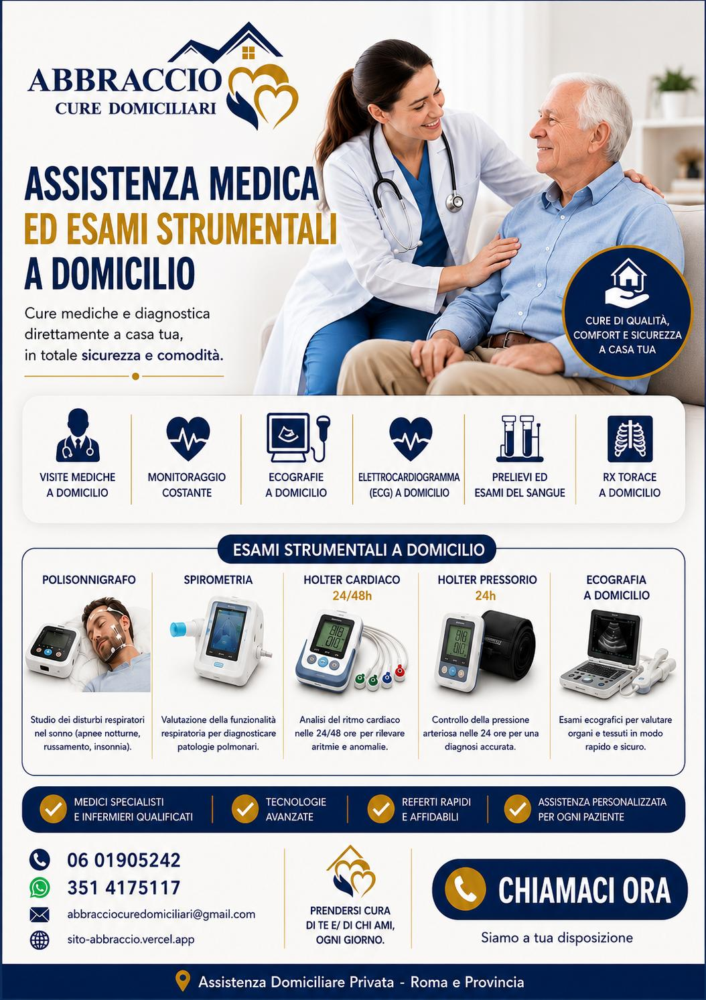
Monitoraggio della pressione arteriosa nelle 24 ore per una diagnosi accurata dell'ipertensione.
Monitoraggio 24hRegistrazione continua dell'attività cardiaca per individuare aritmie e anomalie del ritmo.
ECG dinamicoMonitoraggio notturno per la diagnosi delle apnee ostruttive e dei disturbi respiratori del sonno.
PolisonnografiaElettrocardiogramma e valutazione cardiologica completa direttamente al tuo domicilio.
ECG + VisitaValutazione della funzionalità respiratoria e dell'ossigenazione del sangue.
Funzione respiratoriaEsami del sangue completi con prelievo a domicilio e referti consegnati digitalmente.
Analisi completeAnalisi del sangue arterioso per valutare ossigenazione e parametri respiratori a domicilio.
Gas sangue arteriosoRadiografie tradizionali e digitali direttamente a casa con apparecchiatura portatile.
Radiografia portatileEcografie addominali, muscolo-scheletriche e vascolari con ecografo portatile.
Ecografo portatileUn team multidisciplinare di professionisti al tuo fianco
Esperti in terapie, medicazioni e gestione clinica del paziente.
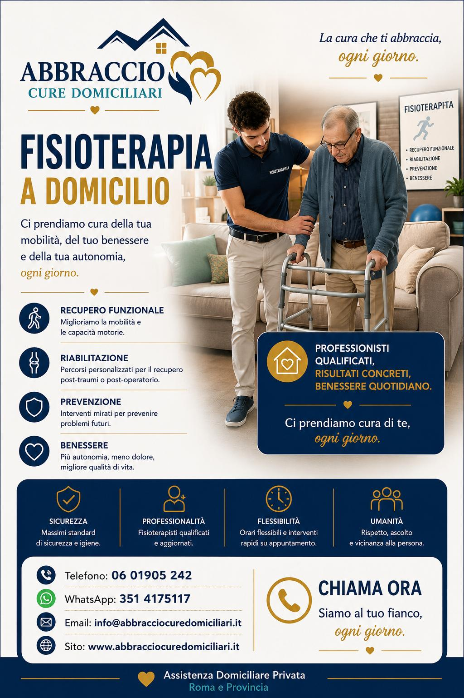
Specialisti della riabilitazione motoria e del recupero funzionale.
Cardiologi, pneumologi e geriatri per visite e consulti a domicilio.
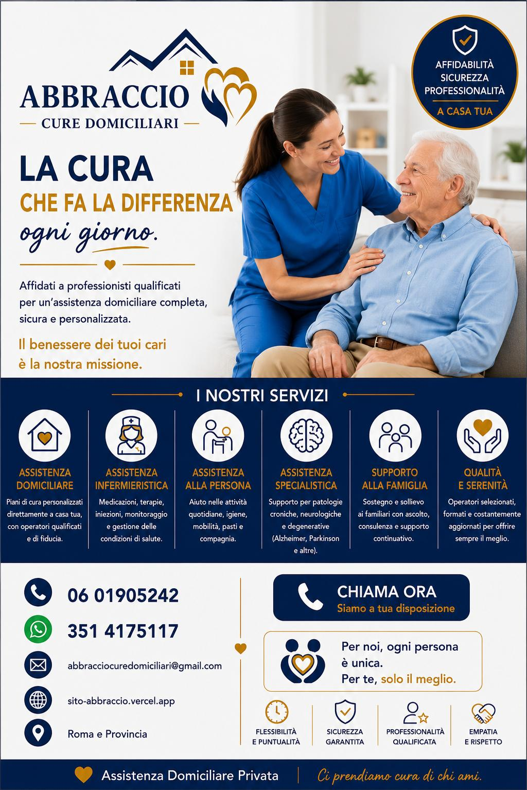
Operatori socio-sanitari per il supporto quotidiano e l'igiene della persona.
Immagini reali del nostro lavoro quotidiano a Roma e Provincia
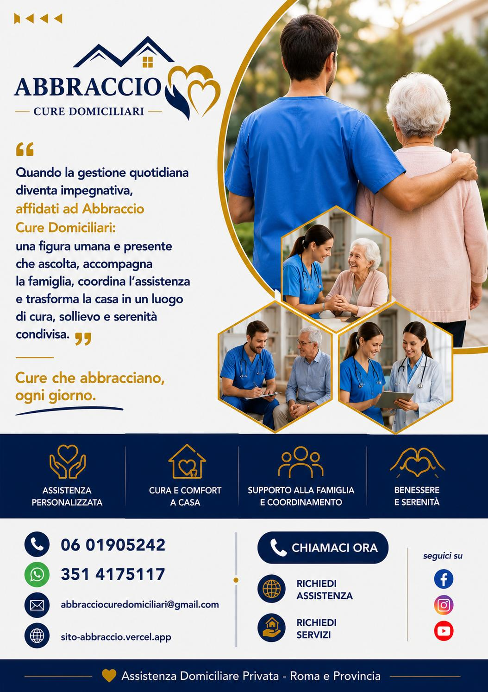
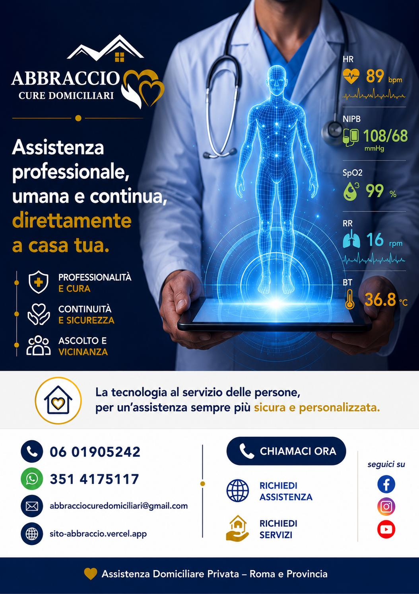
Dal primo contatto fino alla cura, ti accompagniamo in ogni fase
Chiamaci, scrivici su WhatsApp o compila il form. Ti rispondiamo subito.
Analizziamo le tue esigenze e definiamo insieme un piano di assistenza su misura.
Il professionista qualificato arriva a casa tua nell'orario concordato.
Monitoriamo i progressi e adattiamo le cure per garantirti il massimo benessere.
Rispondiamo alle domande più comuni sui nostri servizi di assistenza domiciliare
Il costo varia in base al tipo di servizio, alla frequenza e alla durata degli interventi. Offriamo una consulenza gratuita per analizzare le tue esigenze e fornirti un preventivo personalizzato. Contattaci per maggiori informazioni.
Operiamo su Roma e l'intera area della Provincia di Roma. Per richieste in zone limitrofe al Lazio, contattateci direttamente e valuteremo la fattibilità dell'intervento.
Per interventi programmati, il professionista arriva nell'orario concordato. Per urgenze, attiviamo il servizio nel minor tempo possibile, spesso nelle stesse ore della richiesta. Siamo operativi 24 ore su 24, 7 giorni su 7.
Sì, tutti i nostri professionisti sono regolarmente iscritti ai rispettivi ordini professionali e posseggono le abilitazioni richieste dalla legge. Ogni operatore è selezionato con attenzione sia per competenza tecnica che per doti umane.
Assolutamente sì. Offriamo piani di assistenza su misura — giornalieri, settimanali o mensili — con operatori dedicati che imparano a conoscere il paziente e le sue esigenze. Il piano può essere adattato nel tempo in base all'evolversi delle condizioni.
Accettiamo bonifico bancario, carta di credito/debito e contanti. Per i servizi continuativi è disponibile anche la fatturazione mensile. Emettiamo sempre regolare fattura per ogni prestazione erogata.
Sì. Utilizziamo attrezzature diagnostiche professionali e certificate, identiche a quelle utilizzate nelle strutture ambulatoriali. Gli esami vengono interpretati da medici specialisti e i referti sono consegnati in formato digitale.
La fiducia dei nostri pazienti è il nostro traguardo più importante
"Professionisti seri e umani. Hanno assistito mia madre con dedizione e competenza. Consigliatissimi!"
"Holter pressorio direttamente a casa, comodissimo. Personale puntuale e gentile, referti rapidi."
"Servizio di fisioterapia a domicilio eccellente. Mio padre ha recuperato in fretta grazie a loro."
La recensione sarà pubblicata solo dopo la verifica da parte del nostro staff.
Cerchiamo professionisti sanitari motivati e con forte vocazione per l'assistenza. Offriamo un ambiente stimolante, formazione continua e la possibilità di fare la differenza ogni giorno.
Ambiente collaborativo e di supporto
Aggiornamenti e certificazioni
Orari e assegnazioni su misura
Fai la differenza ogni giorno

Siamo qui per rispondere alle tue domande e organizzare l'assistenza
06 01905 242
Lun-Sab 9:00-17:00351.4175117
WhatsApp disponibileabbracciocuredomiciliari@gmail.com
Rispondiamo entro 24 oreVia di S. Maria Ausiliatrice n° 4/B
00181 Roma (RM)Assistenza: 24h / 7 giorni
Ufficio: Lun-Sab 9:00-17:00Contattaci oggi per una consulenza gratuita e scopri come possiamo aiutarti